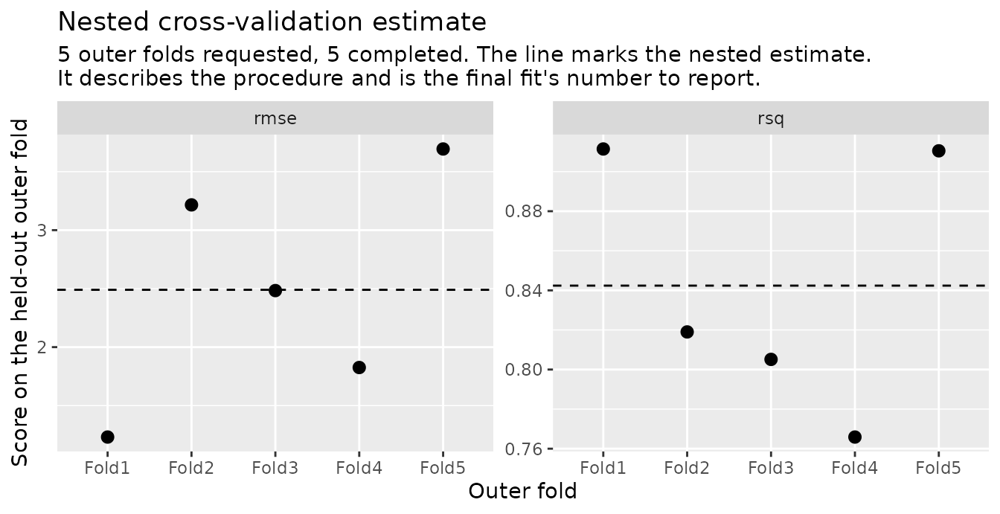

When you tune a model with cross-validation, you try several settings
and keep the one with the best score. That score is optimistic. You
picked the winner because it scored well, so some of its score is luck,
and the same number will not hold up on new data.
vignette("estimate") explains why in more detail.
Nested cross-validation fixes this by scoring the whole tuning procedure rather than the winner alone. It splits the data into outer folds. Within each outer fold it tunes using only the analysis rows, fits the winning setting on those rows, and scores that fit on the assessment rows, which the tuning never saw. The average of those outer scores is an honest estimate of how well tune-then-fit works on new data.
That average is what collect_metrics() reports, and it
is the number to put in a write-up. The model you fit at the end on all
the data is a separate object. It has no score of its own, because every
row it was trained on was already used to choose and fit it.
This page walks from a design to a write-up.
vignette("results") reads everything the results object
holds, vignette("tuners") swaps in the other inner searches
and scores a workflow with nothing to tune, and the parallel
article runs the same call on a pool of workers.
The design
nested_resamples() builds the two-level structure: an
outer resampling, with an inner resampling attached to each outer
fold.
set.seed(1)
folds <- nested_resamples(
mtcars,
outside = vfold_cv(v = 5),
inside = vfold_cv(v = 5)
)
folds
#> # Nested resampling:
#> # outer: 5-fold cross-validation
#> # inner: 5-fold cross-validation
#> # A tibble: 5 × 3
#> splits id inner_resamples
#> <list> <chr> <list>
#> 1 <split [25/7]> Fold1 <vfold [5 × 2]>
#> 2 <split [25/7]> Fold2 <vfold [5 × 2]>
#> 3 <split [26/6]> Fold3 <vfold [5 × 2]>
#> 4 <split [26/6]> Fold4 <vfold [5 × 2]>
#> 5 <split [26/6]> Fold5 <vfold [5 × 2]>Each row is one outer fold. splits holds the outer
split, and inner_resamples holds an ordinary
rset built from that fold’s analysis rows alone, which is
all the tuning for that fold gets to see.
folds$inner_resamples[[1]]
#> # 5-fold cross-validation
#> # A tibble: 5 × 2
#> splits id
#> <list> <chr>
#> 1 <split [20/5]> Fold1
#> 2 <split [20/5]> Fold2
#> 3 <split [20/5]> Fold3
#> 4 <split [20/5]> Fold4
#> 5 <split [20/5]> Fold5mtcars has 32 rows, which keeps this page fast to build.
Nesting removes the most bias on wide data searched hard, and
vignette("estimate") says when it is worth the cost; this
example is here because it builds in seconds.
The model and the grid
Anything tune can tune, this can tune. Here it is a random forest with two parameters marked for tuning, and an explicit grid of candidates.
rf <- rand_forest(mtry = tune(), min_n = tune(), trees = 500) |>
set_engine("ranger") |>
set_mode("regression")
wf <- workflow(mpg ~ ., rf)
grid <- expand.grid(mtry = c(2L, 5L, 8L), min_n = c(2L, 10L))
grid
#> mtry min_n
#> 1 2 2
#> 2 5 2
#> 3 8 2
#> 4 2 10
#> 5 5 10
#> 6 8 10That is 6 candidates, each resampled inside every outer fold. The run below fits 5 outer folds times 5 inner resamples times 6 candidates, 150 models for tuning, plus one per outer fold for scoring. Nested cross-validation is expensive, and that product is where the cost lives.
Running the loop
nested_tune_grid() drives the outer loop. For each outer
fold it calls tune::tune_grid() on that fold’s inner
resamples, selects a candidate by the select rule (the best
by the first metric unless selection_rule() says
otherwise), finalizes the workflow, and fits and scores it on the outer
split. Every statistical step is tune’s. This package adds the loop, the
seeding, and a result that keeps what each fold chose.
set.seed(2)
res <- nested_tune_grid(wf, folds, grid = grid)
res
#>
#> ── Nested cross-validation results ────────────────────────────────────
#> Outer resamples: 5-fold cross-validation
#> # A tibble: 5 × 9
#> splits id .metrics .selected .inner_metrics .notes
#> <list> <chr> <list> <list> <list> <list>
#> 1 <split [25/7]> Fold1 <tibble> <tibble> <tibble [12 × 8]> <tibble>
#> 2 <split [25/7]> Fold2 <tibble> <tibble> <tibble [12 × 8]> <tibble>
#> 3 <split [26/6]> Fold3 <tibble> <tibble> <tibble [12 × 8]> <tibble>
#> 4 <split [26/6]> Fold4 <tibble> <tibble> <tibble [12 × 8]> <tibble>
#> 5 <split [26/6]> Fold5 <tibble> <tibble> <tibble [12 × 8]> <tibble>
#> # ℹ 3 more variables: .completed <lgl>, .tuning_seed <int>,
#> # .outer_fit_seed <int>
#> ℹ Use `summary()` for what the run means: which folds failed, what
#> each one selected, and the estimate across them.Printing shows the object: one row per outer fold, and the record
each fold left behind. summary() says what the run
means.
summary(res)
#>
#> ── Nested cross-validation results ────────────────────────────────────
#> Outer resamples: 5-fold cross-validation
#> Outer folds: 5 requested, 5 completed
#>
#> ── Selected parameters ──
#>
#> ! mtry: 8, 8, 5, 8, 5 (folds disagree)
#> ✔ min_n: 2 (all 5 completed folds agree)
#>
#> ── Estimate (5 of 5 outer folds) ──
#>
#> rmse (standard): 2.49
#> rsq (standard): 0.842
#>
#> ℹ A nested estimate describes the tune-and-fit procedure, not a model
#> you can deploy. Build that with `nested_final_fit()`, and report
#> this estimate as what its procedure achieves.The number to report
est <- collect_metrics(res)
est
#> # A tibble: 2 × 5
#> .metric .estimator mean n std_err
#> <chr> <chr> <dbl> <int> <dbl>
#> 1 rmse standard 2.49 5 0.447
#> 2 rsq standard 0.842 5 0.0293
rmse_row <- filter(est, .metric == "rmse")The RMSE of 2.49 is the mean of 5 scores, each measured on rows the
procedure never touched. std_err is the standard error of
that mean, not the spread of the folds and not a confidence interval.
Two of these numbers from two workflows cannot be subtracted to compare
them, and vignette("estimate") says why.
Each fold’s selection
The summary above listed what each fold selected, and
.selected is where those choices live: a list column of
one-row tibbles, one per outer fold. collect_selections()
stacks them, with the fold each came from beside it.
selected <- collect_selections(res)
selected
#> # A tibble: 5 × 4
#> id mtry min_n .config
#> <chr> <int> <int> <chr>
#> 1 Fold1 8 2 pre0_mod5_post0
#> 2 Fold2 8 2 pre0_mod5_post0
#> 3 Fold3 5 2 pre0_mod3_post0
#> 4 Fold4 8 2 pre0_mod5_post0
#> 5 Fold5 5 2 pre0_mod3_post0
n_mtry <- n_distinct(selected$mtry)
n_min_n <- n_distinct(selected$min_n)Across 5 outer folds, mtry took 2 distinct selected
values and min_n took 1. Most tools throw this away.
nestedtune keeps it, because it is information about the procedure
rather than noise in it.
autoplot() draws those same selections, one panel per
tuned parameter and one point per outer fold. A flat row means the folds
agreed. Scatter means they did not.
autoplot(res)
A parameter the folds agree on is one the data picks clearly. A
parameter they split over is one whose value is largely arbitrary at
this sample size, which is expected wherever the candidates perform
about equally well; vignette("estimate") gives the
mechanism.
The per-fold scores are worth a look for the same reason:
per_fold <- collect_metrics(res, summarize = FALSE)
per_fold
#> # A tibble: 10 × 4
#> id .metric .estimator .estimate
#> <chr> <chr> <chr> <dbl>
#> 1 Fold1 rmse standard 1.23
#> 2 Fold1 rsq standard 0.911
#> 3 Fold2 rmse standard 3.22
#> 4 Fold2 rsq standard 0.819
#> 5 Fold3 rmse standard 2.48
#> 6 Fold3 rsq standard 0.805
#> 7 Fold4 rmse standard 1.83
#> 8 Fold4 rsq standard 0.766
#> 9 Fold5 rmse standard 3.69
#> 10 Fold5 rsq standard 0.911
fold_rmse <- per_fold |>
filter(.metric == "rmse") |>
pull(.estimate)
c(sd = sd(fold_rmse), std_err = sd(fold_rmse) / sqrt(length(fold_rmse)))
#> sd std_err
#> 1.0002719 0.4473352The first number is how much the folds differ from each other, and
the second is the std_err that
collect_metrics() reports, the precision of their mean.
Quoting the second as though it described the folds understates their
disagreement. The other autoplot() view draws that spread,
with a dashed line at the nested estimate.
autoplot(res, type = "performance")
A tuned procedure is usually compared with something simpler, such as
the same model with its parameters fixed, and
vignette("tuners") scores such a workflow on these same
folds with nested_fit_resamples().
The model to deploy
Nothing above produced a model to predict with, and that is
deliberate. The model is built by running the same procedure once more
with the whole dataset in hand. The procedure is read from
res (the inner resampling specification, the grid, the
metrics, the selection rule), so the model and the estimate come from
one search.
set.seed(3)
final <- nested_final_fit(wf, res)
final
#>
#> ── Nested cross-validation final fit ──────────────────────────────────
#> Procedure: grid search, 6 candidates scored
#> Selected: mtry = 2, min_n = 2
#>
#> ℹ This model has no performance estimate of its own. Report the nested
#> estimate from `collect_metrics()` on the results object this fit was
#> built from, which describes the procedure that produced it.
#> ℹ Compare the parameters above with `.selected` from that run. Outer
#> folds choosing differently is selection instability, and it is
#> information about the procedure rather than noise.
#> ℹ `extract_tune_results()` returns the tuning run selection came from,
#> and `extract_scored_candidates()` the candidates it scored. Any
#> metric reachable through the first is a selection-time quantity,
#> optimistically biased as a claim about this model.The outer folds play no part here. Their selections are not pooled or voted on; they belong to the estimate.
The object predicts directly. predict() and
augment() on it are the trained workflow’s own methods, and
extract_workflow() returns the workflow itself.
predict(final, new_data = mtcars[1:3, ])
#> # A tibble: 3 × 1
#> .pred
#> <dbl>
#> 1 20.9
#> 2 20.9
#> 3 24.0extract_tune_results() returns the tuning run this
model’s parameters came from, an ordinary tune result, and
show_best() on it gives the number most tempting to
report:
best_selection <- extract_tune_results(final) |>
show_best(metric = "rmse", n = 1)
best_selection
#> # A tibble: 1 × 8
#> mtry min_n .metric .estimator mean n std_err .config
#> <int> <int> <chr> <chr> <dbl> <int> <dbl> <chr>
#> 1 2 2 rmse standard 2.58 5 0.346 pre0_mod1_post0
tibble(
quantity = c("nested estimate (report this)", "best selection-time score"),
rmse = c(rmse_row$mean, best_selection$mean)
)
#> # A tibble: 2 × 2
#> quantity rmse
#> <chr> <dbl>
#> 1 nested estimate (report this) 2.49
#> 2 best selection-time score 2.58The selection-time score is not an estimate of performance on anything, whichever side of the nested estimate it lands on. It stays on the object as the record of what selection saw, and tune’s readers hand it over without a warning. That is why the results object and the final fit both refuse tune’s ranking generics rather than answering them. On the loop’s results they would rank outer folds, and on the final fit there is one model and nothing to rank.
show_best(res, metric = "rmse")
#> Error in `show_best()`:
#> ! No `show_best()` exists for this type of object.
select_best(final, metric = "rmse")
#> Error in `select_best()`:
#> ! No `select_best()` exists for this type of object.Reproducibility
Seed the session before the call, as elsewhere in tidymodels; neither
function takes a seed of its own. nested_tune_grid() draws
a tuning seed and an outer-fit seed for every fold from the session
state at entry, fixed by the fold’s position in the design rather than
by the order the folds happen to run in, and stores them on the result.
So the same seed gives the same answer whether the folds run serially or
on a pool of workers, and any one fold can be reproduced by hand.
nested_final_fit() draws one pair the same way and carries
it as tuning_seed and fit_seed, and both
functions put the caller’s own random state back as it was found.
res$.tuning_seed
#> [1] 794080207 1906307464 2010156236 1118907979 2046114256
final$tuning_seed
#> [1] 721735354
before <- .Random.seed
invisible(nested_final_fit(wf, res))
identical(before, .Random.seed)
#> [1] TRUE?nested_tune_grid gives the recipe for reproducing one
fold by hand, and ?nested_final_fit the one for redoing the
final fit from its two seeds.
The write-up
Everything a write-up needs is on the two objects. A minimal, honest report:
Hyperparameters (
mtry,min_n) were tuned over a 6-point grid by 5-fold cross-validation, nested inside a 5-fold outer cross-validation of the entire tune-and-fit procedure (n = 32). The outer folds give an estimated RMSE of 2.49 (SE 0.45) for the procedure. Across those 5 folds, selection took 2 distinct values ofmtryand 1 ofmin_n. The deployed model was produced by applying the same procedure to the full dataset, which selected mtry = 2 and min_n = 2.
Three things make it honest. The estimate is attributed to the procedure and not to the model, the instability is reported rather than hidden, and the deployed model is described as what it is: the same procedure applied to all the data, carrying no performance claim of its own.